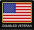

If you're an American disabled veteran in need of employment assistance or other help you'll find here a comprehensive listing of programs and services across the USA, both government and private.
Homepage for information about programs and services for Women Veterans.
VA form to apply for vocational rehabilitation to be submitted to the nearest VA office.
The Disabled Veterans Outreach Program is designed to help the disabled veterans of America with job placement. DVOP contributes intensive services to meet the needs of disabled veterans and other eligible veterans, with a major emphasis on serving those who are financially and educationally limited.
An explanation of the Federal Government's Disabled Veterans Affirmative Action Program (DVAAP).
The Employer Assistance and Resource Network on Disability Inclusion (EARN) is a free resource that helps employers tap the benefits of disability diversity by educating public- and private-sector organizations on ways to build inclusive workplace cultures. EARN offers information and resources to empower individuals and organizations to become leaders in the employment and advancement of people with disabilities.
Here you will find answers to frequently asked questions about Federal contractor reporting requirements and affirmative action obligations under the Vietnam Era Veterans' Readjustment Act of 1974 ("VEVRAA" or "Section 4212"), 38 U.S.C. 4212. The FAQs are arranged by subject area.
The Federal Virtual Training Environment (FedVTE) provides free online cybersecurity training to federal, state, local, tribal and territorial government employees, federal contractors, and veterans.
Once you are trained, registered and certified as a government contractor, you can look for opportunities to do business with the federal government.
Disabled Veterans' Outreach Program (DVOP) specialists develop job and training opportunities for veterans, with a special emphasis on veterans with service-connected disabilities. Local Veterans' Employment Representatives (LVERs) are state employees located in each state's employment service local office who assist veterans in various areas; such as, identifying training and employment opportunities. You can find a listing of the DVOPs and LVERs throughout the country.
A world leader in rehabilitation, the National Disabled Veterans Winter Sports Clinic provides nearly 400 profoundly disabled Veterans with training and rehabilitation every year.
National Resource Directory Connects Wounded, Ill & Injured Service Members, Veterans, Their Families, and Caregivers with Those Who Support Them
The government limits competition for certain contracts to businesses that participate in the Service-Disabled Veteran-Owned Small Business program. Joining the disabled veterans’ business program makes your business eligible to compete for the program’s set-aside contracts.
This site provides information on Veterans Benefits, Veterans, Enduring Freedom, Iraqi Freedom, New Dawn, OEF, OIF, OND, Education, Home Loan benefits, Insurance Benefits, GI Bill, Health Care, Vet Centers for Post 9/11 Veterans
The federal government’s one-stop Web site for information of interest to people with disabilities, their families, employers, service providers, and many others.
Helping Veterans transition back home and into meaningful careers is a priority at VA. They have benefits and incentives designed for your success. Get started in an engaging, new role that builds on your strengths and experience, and allows you to continue serving your country.
Disability Compensation is a tax free monetary benefit paid to Veterans with disabilities that are the result of a disease or injury incurred or aggravated during active military service.
Tables showing the 2019 VA disability rates for veterans with a rating 10 percent or higher. (Effective Dec. 1, 2018)
Connect with the Veterans Crisis Line to reach caring, qualified responders with the Department of Veterans Affairs. Many of them are Veterans themselves.
You may receive Vocational Rehabilitation and Employment (VR&E) services to help with job training, employment accommodations, resume development, and job seeking skills coaching. Other services may be provided to assist Veterans and Servicemembers in starting their own businesses or independent living services for those who are severely disabled and unable to work in traditional employment.
The Wounded Warrior Program provides veterans with employment opportunities with the House of Representatives.
23rd Veteran assists veterans in their transition into society through our exclusive positive reconditioning program. We help returning veterans live happier and healthier lives.
To honor the many service men and women who are still suffering from the conflicts of war, 4 Paws for Ability will be making service/assistance dogs available to help them lead a more independent life.
Able Forces Foundation is a 501(c)(3) non-profit, founded by a disabled veteran with a MISSION to provide immediate financial assistance to military and veteran families identified in financial crisis by military base or veteran Advocates.
The Jobs for Vets programs in Birmingham and Montgomery provide employment training and job placement services to homeless veterans.
The Blinded Veterans Association (BVA) is a U.S non-profit organization that was established to "help veterans and their families meet & overcome the challenges of blindness.
Learn about the California state and federal benefits you are entitled to receive and how to claim them. Those benefits could compensate you for a service-connected disability, allow you to begin or resume your college education, care for your health, train for or find employment, buy a home, live out your years with dignity and respect, and much more!
DAV is a nonprofit charity that provides a lifetime of support for veterans of all generations and their families, helping more than 1 million veterans in positive, life-changing ways each year.
The Disabled Veterans National Foundation (DVNF) provides critically needed support to disabled and at-risk veterans who leave the military wounded—physically or psychologically—after defending our safety and our freedom.
A Minnesota campground open to all military, veterans that have been Honorably discharged, their families, and sponsored friends. The campground has a wide variety of recreational activities for the entire family, to include camping (cabins, tents, and RV sites), boating, fishing, tubing, swimming, softball, volleyball, horseshoes, canteen, children’s game room, and a spacious YELLOW RIBBON PAVILION for parties, gatherings, and picnics.
The U.S. Chamber of Commerce Foundation’s Hiring Our Heroes (HOH) initiative launched in March 2011 as a nationwide effort to connect veterans, service members, and military spouses with meaningful employment opportunities.
Assists government agencies, community-based organizations, social workers, case managers and others who are helping homeless Veterans prepare for and obtain employment.
Homeless Veterans Fellowship is a 501(c)(3) non-profit organization that offers a comprehensive set of services designed to address homelessness among veterans. Located in Ogden, Utah, our services have provided for veterans all over Utah and the intermountain area since HVF was founded in 1989.
The Job Accommodation Network (JAN) is the leading source of free, expert, and confidential guidance on workplace accommodations and disability employment issues. Working toward practical solutions that benefit both employer and employee, JAN helps people with disabilities enhance their employability, and shows employers how to capitalize on the value and talent that people with disabilities add to the workplace.
MCCS offers multiple venues to help active duty personnel and their family members with employment and job search assistance.
Marine For Life Network (M4L) connects transitioning Marines and their family members to education resources, employment opportunities, and other Veterans services that aid in their career and life goals outside of military service.
Operation: Job Ready Veterans is a nonprofit organization dedicated to preparing veterans, military spouses and caregivers for successful employment.
Paralyzed Veterans of America, a congressionally chartered veterans service organization founded in 1946, has developed a unique expertise on a wide variety of issues involving the special needs of our members – veterans of the armed forces who have experienced spinal cord injury or dysfunction.
Project: Return to Work Inc. (R2W), a 501(c)3 non-profit organization established in 1998, provides free employment services to all applicants, and personalized vocational rehabilitation services to Americans with disabilities including wounded warriors and their spouses.
Provides quality advocacy for all US Veterans, Armed Forces members, dependents and survivors, through benefit counseling and programs, claims, and outreach services.
The Veterans Service Agency website will regularly provide information on services from housing and career assistance, to academic opportunities, to help ensuring you receive all benefits to which you are entitled.
Integrating our award-winning, evidence-based practices and strategic partnerships, the Veterans Project includes homeless outreach, housing services, supported employment, peer-driven supports, substance abuse treatment, integrated physical and mental health services, and trauma-based therapies.
Our Veterans Business Outreach Center (VBOC) serves active duty personnel, veterans, and military spouses who want to learn more about, then start and grow a small business of their own in the state of Florida.
Thousands of employers are looking for candidates just like you to fill veterans jobs! Search through millions of fresh and relevant local veterans jobs on veterans.jobs.
Volunteers of America’s transitional living program provides support for up to five chronically homeless, single men at the Rest & Recoup House and six men at the Eagles' Rest House—referred primarily from Healthcare for Homeless Veterans (HCHV)—who are dealing with co-occurring issues of mental illness and substance abuse.
The Warrior Foundation Freedom Station in San Diego is committed to supporting our warriors in a variety of ways including providing quality-of-life items, support services and transitional housing designed to assist them and their families during both recovery and transition processes.
The WAVES Project is a 501c (3) Non-Profit and has been established to provide an opportunity for American Veterans with service connected disabilities and their families to experience scuba diving. Each veteran and a dive companion of their choice can experience the freedom of scuba diving for free.